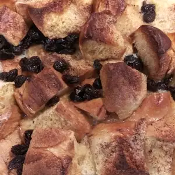

Bread Pudding Recipe

This is a delicious yet no frills bread pudding.
Ingredients
- 10 slices white bread, cut into cubes
- 1/4 cup butter, melted
- 1 teaspon ground cinnamon
- 1/2 cup raisins
- 6 eggs, beaten
- 3/4 cup white sugar
- 2 teaspoons vanilla extract
- 1/2 teaspoon salt
- 3 cups hot milk (160 degrees F/71 degrees C)
- 1 pinch ground nutmeg
Steps
- Preheat oven to 375 degrees F (190 degrees C). Lightly butter one 2 quart baking dish.
- Combine bread cubes, butter, cinnamon and raisins; mix well and place in baking dish.
- Beat together the eggs, sugar, vanilla and salt. Add milk, mix well and pour over bread cubes.
- Sprinkle with nutmeg and bake for 25 minutes.